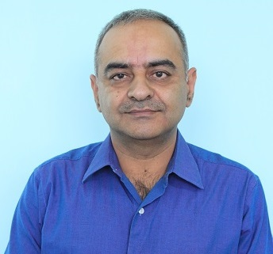
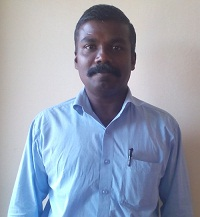
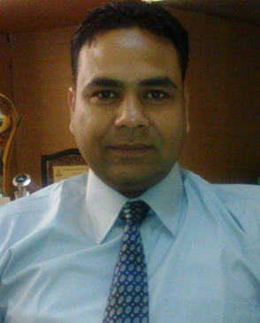
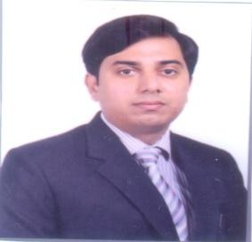
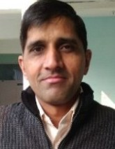
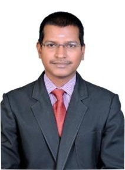
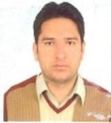
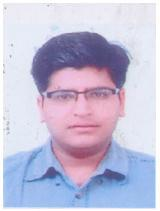

DR. JATINDER MADAN
Educational qualification: B.E. (Panjab University), M.E. (Thapar Institute of Engg. and Tech.), Ph. D (IIT Delhi)
Area of Specialisation: Sustainable Design and Manufacturing, Computer-aided Design and Manufacturing (CAD/CAM), Design Automation, Design for Manufacture and Assembly (DFMA), Smart Manufacturing, Product Design and Development
Additional role in college: Professor In-charge Academic Affairs Head, Mechanical Engineering Department Chairman, Technical Purchase Committee
Contact: jatindermadan@ccet.ac.in

DR. VETTIVEL S C
Educational qualification: B.E. (Mechanical Engineering/ Manonmaniam Sundaranar University, Tamilnadu.), M.E. (Production Engineering / Annamalai University, Chidambaram,Tamilnadu), Ph.D (Mechanical Engineering / Anna University, Chennai, Tamilnadu)
Area of Specialisation:Powder Metallurgy, Nano Composite, Smart Manufacturing, Tribology, Coating of Materials and Production Engineering .
Contact: scvettivel@ccet.ac.in, +91-9865822376.

DR. RADHEY SHAM
Educational qualification:B.E. (Mechanical Engineering), M.E. (CAD/CAM & Robotics), PhD (Mechanical Engineering)
Area of Specialisation:Thermal Engineering , CRYOGENICS and IC Engines
Contact: radheysham@ccet.ac.in, 9888040982.

DR. ASHWANI KUMAR
Educational qualification:Ph. D (Mechanical Engineering), M.E. (Mechanical Engineering), B. Tech. (Mechanical Engineering)
Area of Specialisation:Thermal ,Design and M.R. Fluids.
Additional role in college:In-charge Technical club (Mechanical Engineering), In- Charge Training (Mechanical Engineering).
Contact:ashwanikumar@ccet.ac.in, 09872823250.

ER. VINOD KUMAR
Educational qualification: M.E. (Mechanical), B. Tech. (Mechanical).
Area of Specialisation: Design of Mechanical Equipments, Mechanics of Mateials, Theory of Machines.
Additional role in college:Incharge (Fire-Fighting, water coolers & Air Conditioners), Member- NSS, Class Incharge 2014 Batch (ME), Lab Incharge (MOM Lab, EG Lab and Project Lab)
Contact: vinodchauhan@ccet.ac.in, 9466736896.
DR. MUKESH KUMAR
Educational qualification: B.TECH.,M.E., Ph.D. (Pursuing)
Area of Specialisation: Production Engineering.
Additional role in college: Assistant Professor In-charge(Exam & Results), NSS/ NCC Program officer, Joint In-charge Sessional, Incharge(Exam & Results): CSE Department, Member NBA of Committee: CSE Department, Joint In-charge Stationary: CSE Department.
Contact: mukeshkumar@ccet.ac.in, 9478420561.

ER. V SENTHIL
Educational qualification:B.E(Mechanical/Government college of Engineering, Salem(University of Madras, Tamil Nadu)), M.E.(CIM/College of Engineering, Guindy(Anna University, Tamil Nadu)), Ph. D. (Pursuing) in the area of 3-D Printing
Area of Specialisation:Computer Aided Design, Computer Aided Manufacturing, Computer Integrated Manufacturing, Rapid Prototyping.
Additional role in college: Faculty In-Charge Legal Literacy Club, Faculty In-Charge National Cadet Crops, Member-Institute Quality Audit Cell
Contact: vsenthil@ccet.ac.in, 09884121196.

ER. RAJIV KUMAR
Educational qualification: M-Tech, (Pursuing Ph.D)
Area of Specialisation:Machine Design & Manufacturing.
Contact: er_ rajiv3444@yahoo.co.in

ER. NIPUN SHARMA
Educational qualification: B. Tech. (Mech.), M. Tech. (Mech. & M/c Design).
Area of Specialisation:Machine Design.
Additional role in college:In-charge of : 1. Results Re-appear 2. Sports 3. Air Conditioners 4. Water Purifier 5. Fire Fighting 6. Water Coolers.
Contact:nipun_sharma27@yahoo.com